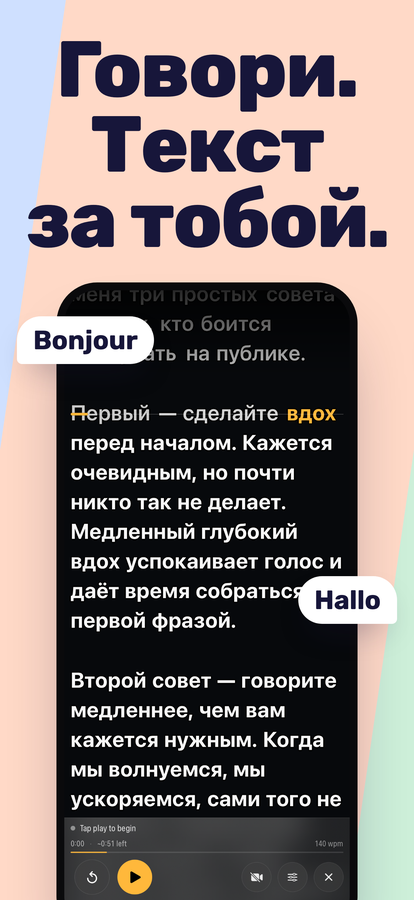
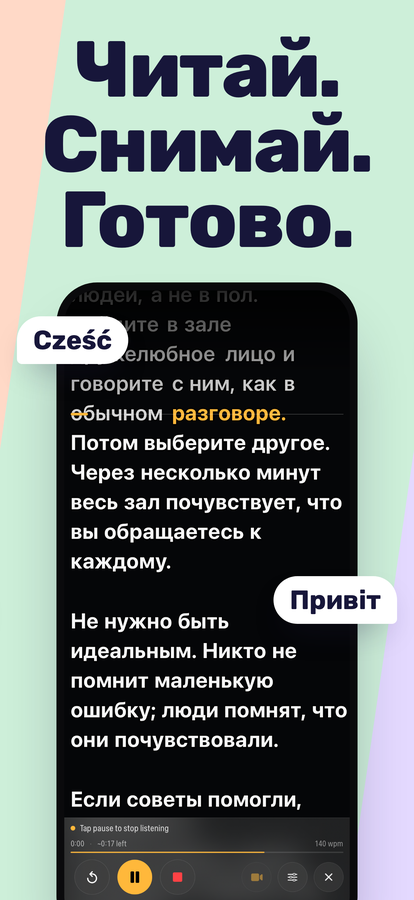
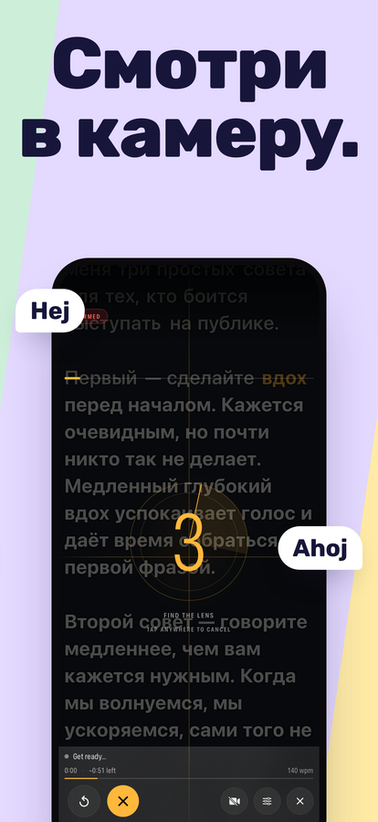
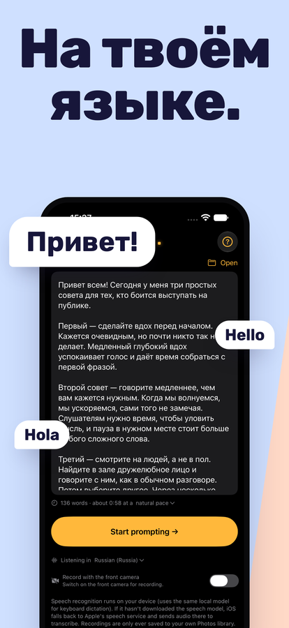

Телесуфлёр, который следует за твоим голосом.
Говори — и текст прокручивается вместе с тобой. Остановись — и он ждёт. Перефразируй, пропусти слово или начни фразу заново — он не потеряет место, потому что слушает то, что ты на самом деле говоришь, а не крутится с фиксированной скоростью, за которой тебе приходится поспевать.
Скачать в App StoreiPhone и iPad · iOS 16 или новее · Одна покупка, без подписки, без аккаунта




Что он умеет
Следует за твоим голосом
Распознавание речи сопоставляет то, что ты говоришь, с твоим текстом и держит текущую строку на строке чтения. Делай сколько угодно пауз. Чтобы сдвинуться на строку вверх или вниз, не трогая телефон, скажи «scroll up» или «scroll down» (голосовые команды — на английском).
Слушает на твоём языке
On Cue определяет язык открытого сценария и слушает тебя на нём — русский, итальянский или любой язык, который распознаёт твой iPhone. При первом запуске он начинает с языка твоего iPhone.
Записывает, пока ты читаешь
Одно касание — и он начинает слушать и снимать одновременно. Запись на фронтальную камеру с текстом поверх изображения сохраняется прямо в приложение «Фото» с тем разрешением и частотой кадров, которые поддерживает твоё устройство.
Справляется с импровизацией
Отойти от текста — это нормально, а не ошибка. Перескочи вперёд или придумай фразу на ходу — он снова найдёт тебя, а не будет стоять и ждать слово, которого ты так и не произнёс.
Создан для чтения
Настраиваемые размер текста и поля, четыре варианта выравнивания, строка чтения, которую можно перетащить поближе к объективу, и контраст для каждого слова, чтобы текст читался даже на светлом фоне.
Знает, сколько ты говоришь
Подсчёт слов и ориентировочная длительность прямо во время набора. Прошедшее и оставшееся время и твой темп во время речи — по твоей реальной скорости, а не по предположению.
Остаётся на твоём устройстве
On Cue никуда не отправляет ни твой текст, ни твои записи. Распознавание речи выполняется на самом устройстве везде, где это позволяет iOS.